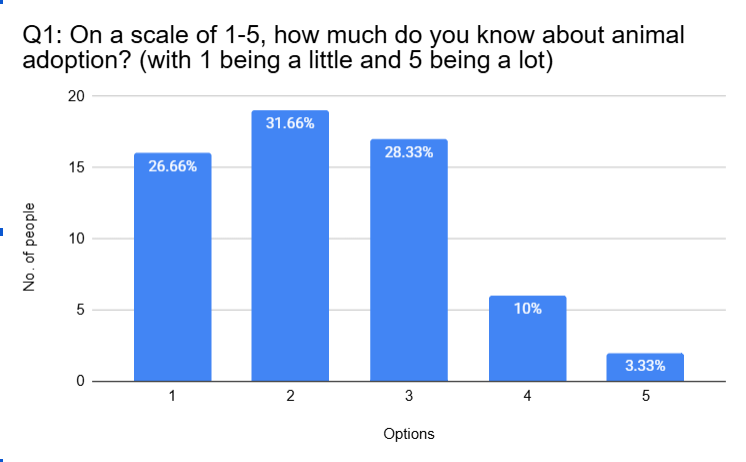
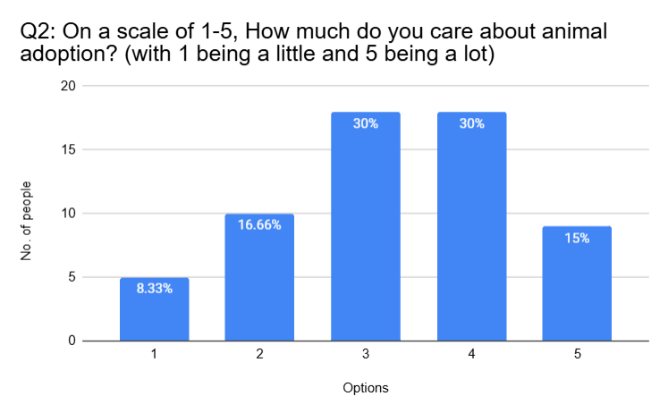
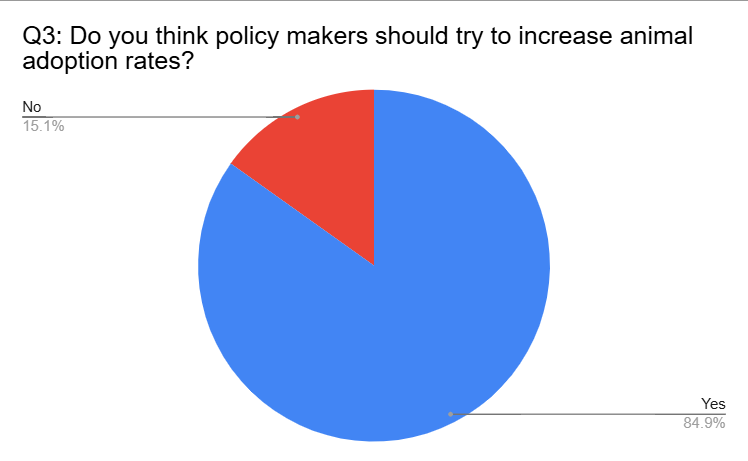
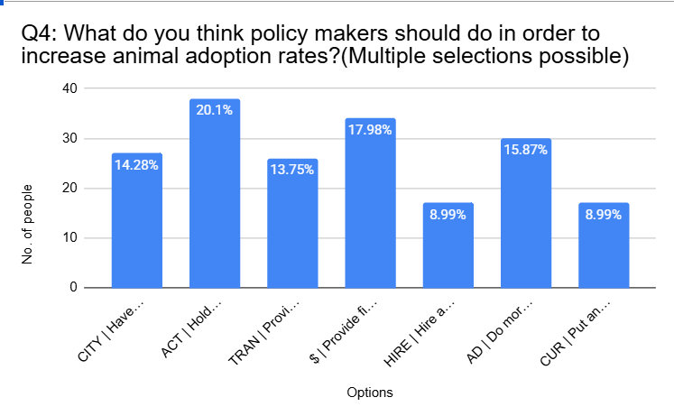
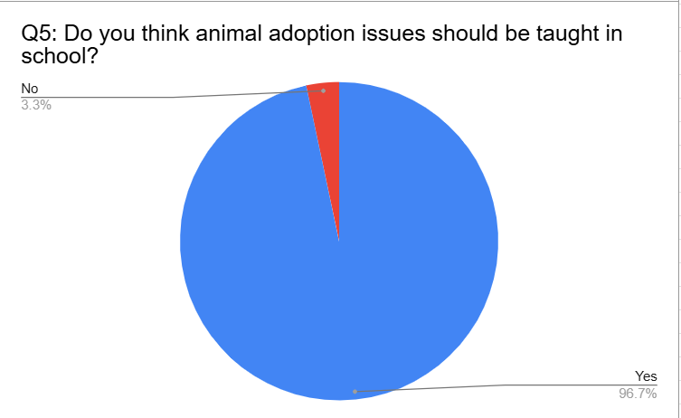

Alson
Alson
Data
Age Group
This is my age group's table. In this table, I have 7 age groups.

I chose a bar chart because I needed people to see the most and least distributed areas.

In the bar graph, I found that more than half people are teenagers. there have 51.67%. And just only have 2 old people in the age group there just only have 3.34%.
This question asks what we wrote, and we want to know how we are visiting people who are a few years old , and it is also an open-ended categorical question. I chose a bar chart because I needed people to see the most and least distributed areas in the chart 51.67% of people are teenagers, and 6.3.34%.% of people are old people. I never knew we would ask people aged 70~79.
Q1
This is my Q1's table. In this table, I have scsle 1-5.

I choose a bar chart because I needed people to see the most and least distributed areas.

In the bar graph, I found that more than half people choose 5. there have 31.66%. And just only have 2 people in the Q1 there just only have 3.33%.
The questions we posed are exactly the same as those we recorded. The purpose of obtaining this information is: To demonstrate that many people do not understand animal adoption and to encourage schools to offer animal adoption courses. This is a single-choice classification question. I chose to use a bar chart to display this data because it has 5 categories, and I want to compare the differences between each scale value. 31.66% of people chose scale 2 and 3.33% of people chose scale 5 and 8.10% of people chose scale 4
Q2
This is my Q2's table. In this, I have scale 1-5

I choose a bar chart because I needed people to see the most and least distributed areas.

In the bar graph, I found that more than half people choose 2. there have 31.66%. And just only have 2 people choose 5 there just only have 3.33%.
The question asked about something we wrote about before, and we still wanted to know how many people care about animal adoption. This is a single-choice classification question. I chose to display this data as a bar chart because it has 5 categories and I wanted to compare the differences between the numbers at each level. In this chart, 30% chose levels 3 and 4, 8.33% chose level 1, and 15% chose scale 5.
Q3
This is my Q3's table. In this, I have Yes or No

I chose a pie chart because I needed people to see the difference in quantity.

In the pie graph, I found that more than half people choose Yes. there have 84.9%. And just only have 4 people choose NO there just only have 16.66%.
This question asked what we had written, and we wanted to know what measures people thought policymakers wanted to try to increase animal adoption rates. This was a single-choice classification question. I chose to use a pie chart to display the data because it only has two categories, and I wanted to show the overall distribution of "yes" and "no". In the pie chart, 84.9% of people chose Yes and 15.1% chose No. I originally thought less than 10% would choose No, but in reality.
Q4
This is my Q4's table. In this, I have: CITY | Have animal shelters closer to the cities ACT | Hold more face-to-face activities for animals and animal adopters TRAN | Provide free transportation to animal shelters $ | Provide financial support for taking care of the animals HIRE | Hire animal shelter workers more AD | Do more advertising CUR | Put animal adoption issue as part of the curriculum

I choose a bar chart because I needed people to see the most and least distributed areas.

In the bar graph, I found that more than half people choose ACT | Hold more face-to-face activities for animals and animal adopters. there have 20.1%. And just only have 2 people choose HIRE | Hire animal shelter workers more and CUR | Put animal adoption issue as part of the curriculum there just only have 17.98%.
This question asked us what we had written and wanted to know if we would be willing to adopt an animal if policymakers offered us support. This was a multiple-choice, categorical question. I chose to use a bar chart to present the data because it has seven categories, and I wanted to compare each option. 20.1% chose "Action" | to hold more in-person events for animals and animal adopters. 8.99% chose "Hire" | to increase the hiring of animal shelter staff, and "Courses" | to incorporate animal adoption issues into courses. I never expected these two options to have the same percentage.
Q5
This is my Q5's table. In this, I have Yes or No

I chose a pie chart because I needed people to see the difference in quantity.

In the pie graph, I found that more than half people choose Yes. there have 96.66%. And just only have 4 people choose NO there just only have 3.33%.
This question is based on something we wrote previously; we want to know if people would like to discuss animal adoption in schools. This is a multiple-choice question, a classification problem. I chose to use a pie chart to represent this data because it only has two categories, and I wanted to show the overall distribution of Yes and No. 96.7% of people chose Yes, and 3.3% chose No. I guess no one would choose No.